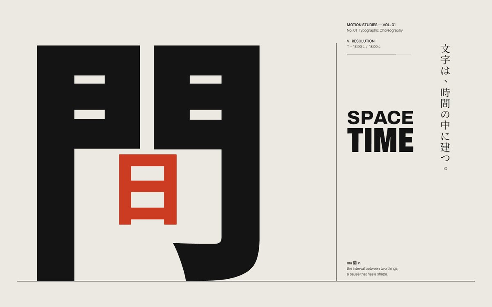
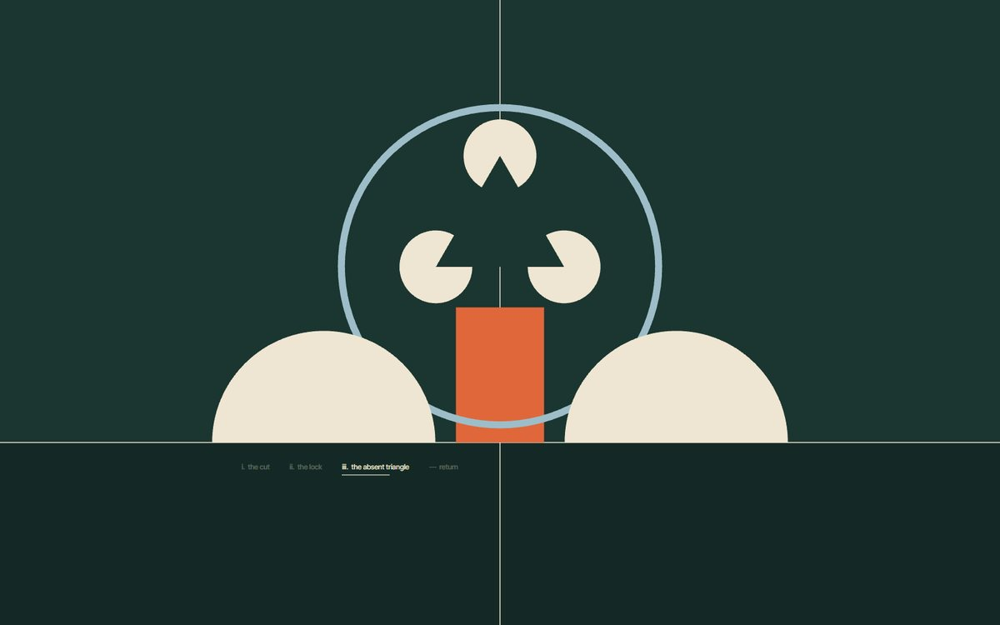
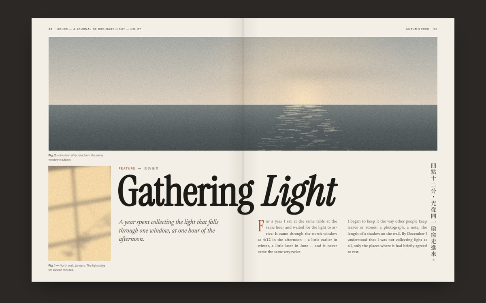
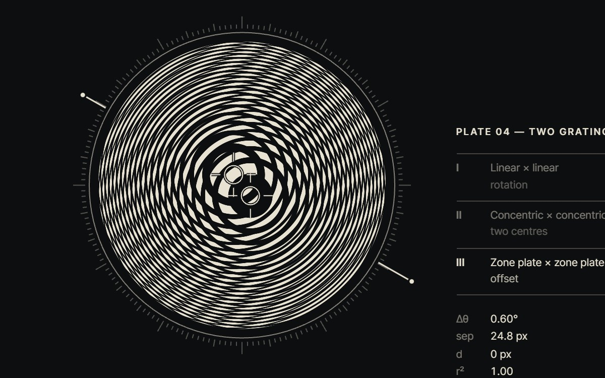
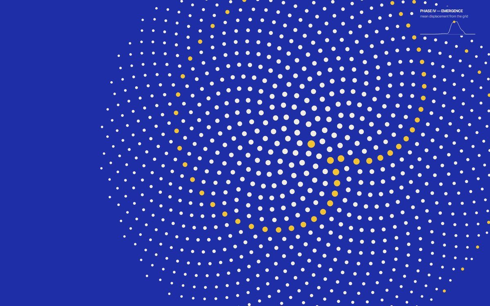
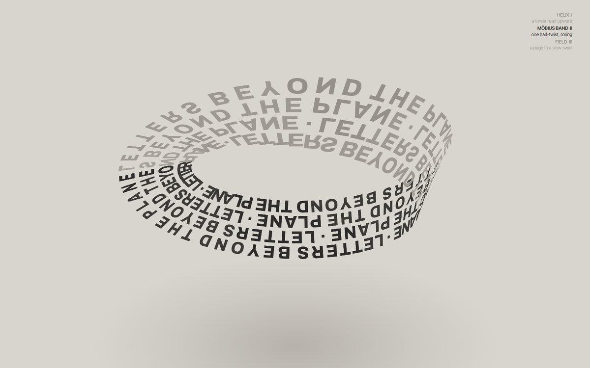

Vol. 01 The Poetry of Moving Forms
Six motion posters, each built around one question that a still image cannot answer. Every frame is meant to be a finished composition; the pieces are about what happens between them — interval, cause, interference, error, depth.
The Architecture of Moving Letters
The kanji 間, the interval, built as architecture: a gate in two halves that pass through each other until the ink cancels, a red square stretched into a lintel and dropped in as the sun.

View workA Choreography of Pure Forms
A disc, a slab, a line and four arcs, each with one rule of movement. Nothing moves without a cause — until three notched discs agree and a triangle nobody drew appears.

View workA Magazine That Refuses to Stay Still
“Gathering Light”, a feature about one window at 4:12 in the afternoon, re-edits its own spread through three complete layouts — pictures first, then headline, then columns, then captions.

View workThe Geometry of Optical Interference
Two gratings of light on one plate. Lines become circles become zone plates, and the interference between them changes family three times. No wave in the image is drawn.

View workThe Emergence of Order
A perfect grid, an error at the golden section, a wave of turbulence — and a sunflower spiral that the turbulence turns out to have been heading for. Then the grid is scanned back into place.

View workLetters Beyond the Plane
Two hundred and forty letters used as building material: a helix tower, a Möbius band whose twist keeps rolling, a page lifted into a swell. Black type, one light, no materials.

View work